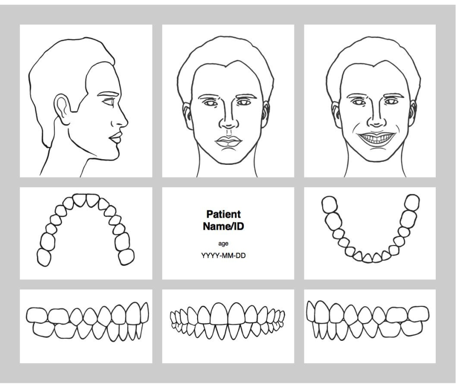
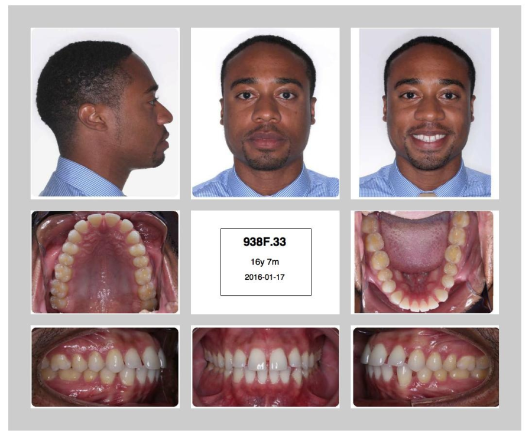
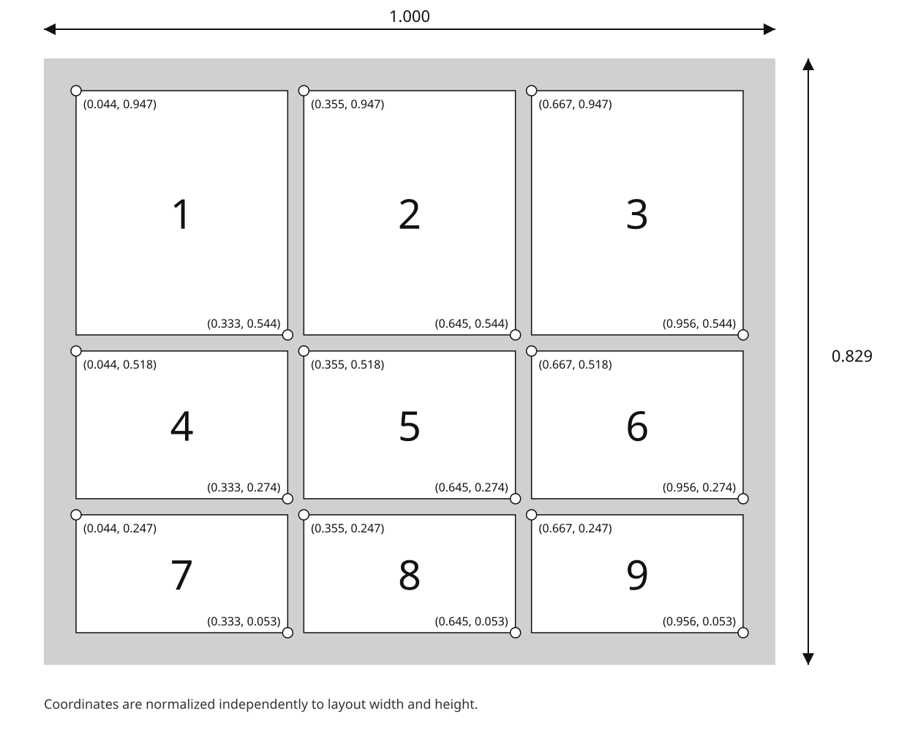
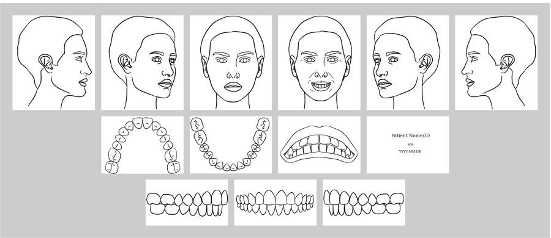
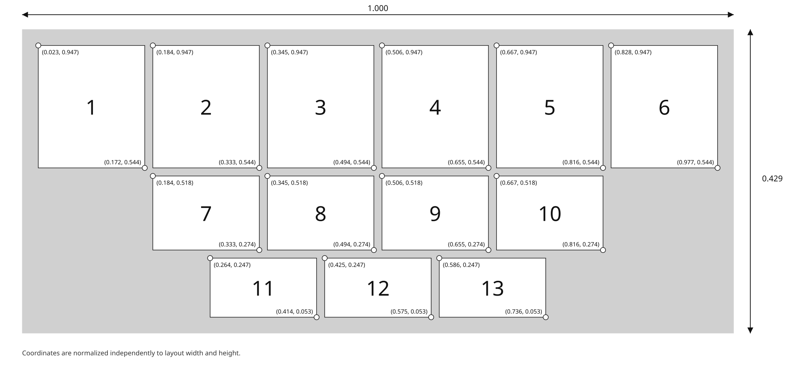
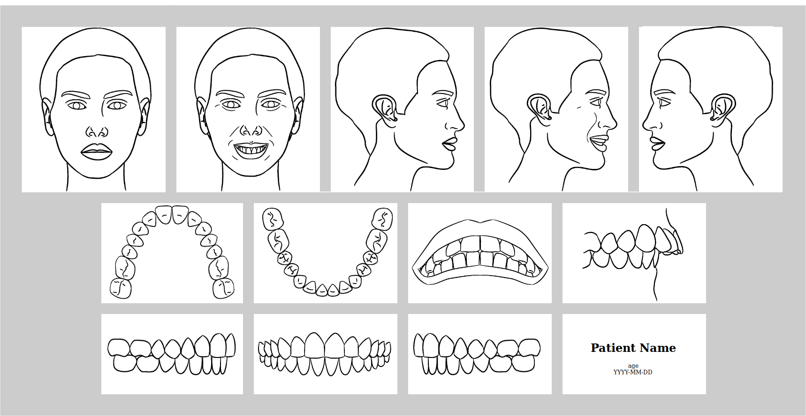
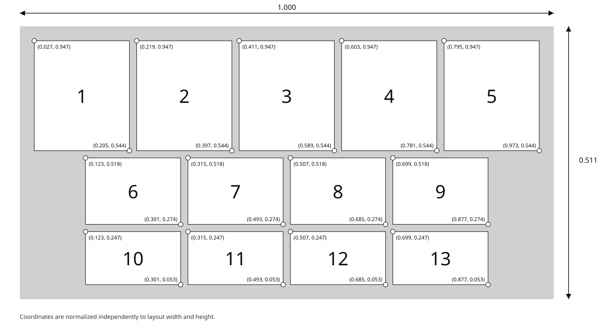
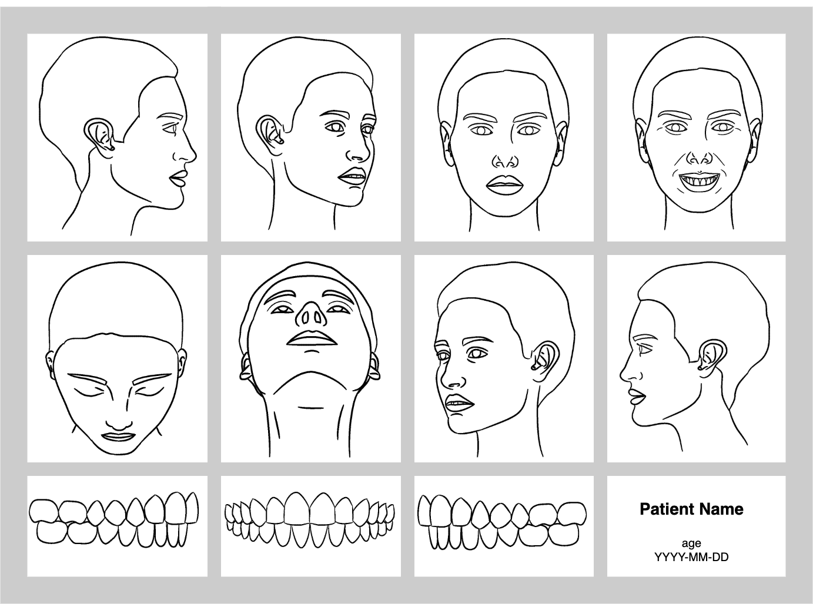
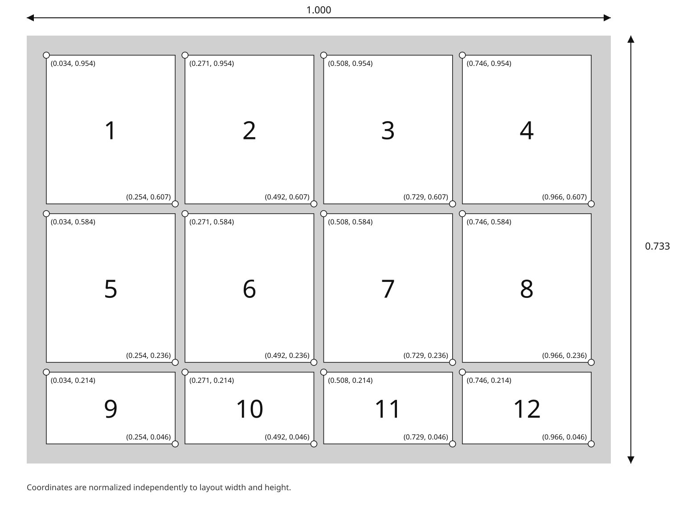

Appendix B: ViewSet Examples#
The figures in this appendix are informative. Normative Image Display requirements are specified in Section 3.1.4.1.3.2.
The example figures were imported from the ADA 1100 working materials. The normalized-layout figures are generated from the normative Volume 2 layout tables. The clinical photographic example is included with the subject’s authorization for publication.
Viewset VS-01#
{kind=link}

Informative line-drawing example of VS-01.#
{kind=link}

Informative clinical photographic example of VS-01.#
{kind=link}

Informative VS-01 layout with normalized dimensions and positions.#
Viewset VS-02#
{kind=link}

Informative line-drawing example of VS-02.#
{kind=link}

Informative VS-02 layout with normalized dimensions and positions.#
Viewset VS-03#
{kind=link}

Informative line-drawing example of VS-03.#
{kind=link}

Informative VS-03 layout with normalized dimensions and positions.#
Viewset VS-04#
{kind=link}

Informative line-drawing example of VS-04.#
{kind=link}

Informative VS-04 layout with normalized dimensions and positions.#